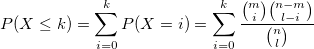

/math-7b8b965ad4bca0e41ab51de7b31363a1.png "n") : The population size
: The population size/math-6f8f57715090da2632453988d9a1501b.png "m") : The number of success states in the population
: The number of success states in the population/math-2db95e8e1a9267b7a1188556b2013b33.png "l") : The number of samples drawn
: The number of samples drawnprob = hygecdf(k, m, n, l) computes the lower tail probabilities in given value , associated with a hypergeometric distribution
The lower tailed probability:

where
: The population size: The number of success states in the population: The number of samples drawn/math-8ce4b16b22b58894aa86c421e8759df3.png "k") (input, int) (input, int) (input, int) (input, int)
(input, int) (input, int) (input, int) (input, int)